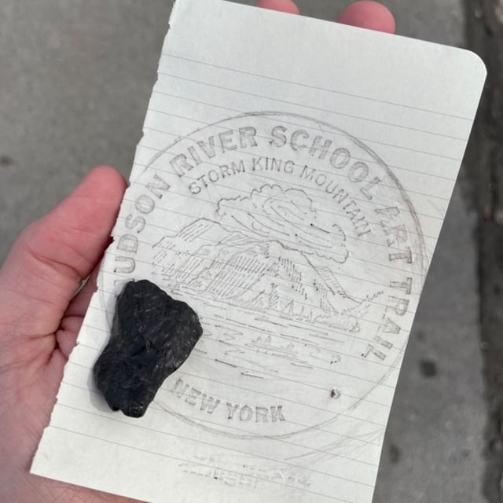

And so closes the second year of my garden. My movies list now includes what I've watched over the year. I've just returned from a trip to Hawaii and will be reflecting on this in coming entries.
I'm excited for the next cycle: I have a python projects book which I think will spawn several fun exercises, I will be brushing up on my spanish in anticipation for a Mexico trip later in the year, my physical therapy for my leg seems to be helping, I'll be running a trail half-marathon.
01X
The long overdue migration is finally taken hold. Previous to now I had been writng every aspect of this digital garden by hand. Ever HTML object, the CSS styling, every internal and external link, every header and footer. I knew that at a certain point this practice would become unsustainable and that especially my navigation format would balloon to the bloated state I had found it in. The addition of a single new page meant that I needed to manually edit nearly a dozen other pages to make sure all nav bars have links to this new entry.
So I bit the bullet and wrote my own website processing engine. I called it Astrea and I am very proud of it. I took several passes at its construction. I initially had some very lofty goals, a custom markdown parser and intricate navigation constructor. But after much frustration I decided to keep things simple. Astrea allows me to write all of a page's body in raw HTML, giving me full creative control, but automates the writing of the HTML meta text, header, navigation, and footer. Life is so much easier now.
Creating Astrea was a wonderful experience. I feel so close to this little script I wrote and it amazes me that I was able to create something that works so well, or at least well enough for my purposes. I would love to have other people try it out and create their own websites. Maybe some day, or maybe it will remain my special tool meant for me alone. I'm okay with that too.
01S
Finally finished and published my esolang post. I put significant effort into this as I imagined myself using the post as a writing sample for science publications. I was told by an advisor that I am talented at communicating topics. I dont know if that translates well to my writing style. It feels a bit stiff, dry. If I let loose and write how I speak... Might be interesting, maybe I'll give it a go.
I started work at my first real job. It's a small software company of 10 people here in Philadelphia. The office is right in Center City, I'm enjoying it so far, everyone seems nice. The work is interesting to. I'm a Data Scientist/Software Engineer maintaining and developing SaaS products which use data processing and machine learning to help keep workers safe in industrial facillities. I finally did it... I'd been on the job hunt for months. I did it.
Oh. And I also successfully defended my thesis. I am Dr. Sean Lewis now. Not a bad end to the Summer.
01P
Summarized my painted lightning presentation. I'd like to continue this for the others in the nexus. It's pretty straightforward but tedious work. I also finally filled out the running page, I don't see much more development happing there except for maybe a running log or stories of interesting places I've run at.
I've been thinking more about my transition away from academia and the sudden shift I am to experience when I receive an actual living wage for my work. I'd like to use the shift as an opportunity to reinvent how I budget myself and track my expendatures. I thought of making a minimalistic command line tool where I can enter my spending amounts and corresponding catagories. It would have to be in Python at first and would allow me to practice OOP methods in defining and maintaining a state class. Could be fun.
01N
Major additions to my research catalog. The nexus was created where I will maintain a form of less "heavy" talks and presentations I have given.
Continuing job search, still no luck with interviews, despite making a 3rd round interview at Exponent Consulting. I'm expanding my application network to services like Otta which seems to have increased access to startup companies which could be a cool direction to take.
The main moral of the story this cycle is: my greatest enemy is stagnation. I do not want to become paralyzed with panic at not yet having a job (while also finishing up my Ph.D.). Instead, I will continue expanding my skills and exercising my programming abilities. In that spirit I am finishing up a Coursera course on extracting trends from alternative datasets. I now know infinitely more about web scraping, pandas data frames, GIS python libraries, and natural language processing. I'll make a page on this soon under projects. I am calling it Amleth.
01F
Traveled to Beacon, NY for a house-warming party for A's sister. It was an enjoyable time but a keen reminder that as I get older, the appeal of high-alcohol large social gatherings is swiftly leaving. I don't enjoy drinking, I don't enjoy the numbed way of speaking and dull topics of conversation. I probably would have had more fun if I had someone helping me with my static site generator project instead. No matter, the trip was still fun and worth the long drives.

At the shore of the Hudson, I found a piece of anthracite coal and used it as a medium to create a rubbing of a plaque along our trail. I was very pleased by this, and happy to share with others. I was also warmed by the fact that A seemed just as interested. Anthracite is the highest grade of coal and is what is used in firing trains, ships, and factories.
Got to the final round of interviews with Chatham Financial. Blundered the mathematics section of the interview and was not offered a position. Perhaps for the better, it helped me realize the importance of continuing to pursue my goal of working at the Los Alamos National lab. I should be applying for positions that will fully utilize my skills in high perfomance computing. Looking at General Dynamics Information Technologies, Lockheed Martin, and Leidos next.
01E
VorAMR has been updated to now more accurately represent the initial grid conversion block structuer. Before, FLASH would immediately refine the entire grid to maximum, somewhat defeating the purpose of VorAMR's precision-focused resolution scheme. The fix was to scale down the refine-on-jeans-length criterion such that only 5 cells are required to resolve the jeans length rather than the default 24. Then, by removing all other refinement variables, the grid requirements became much more lax.
I started to include modules that will allow a user to define a region-of-interest only within which will refinement be applied (though the field values will still be interpolated across the whole grid). This is on pause for now while I get the core of VorAMR going. Speaking of, the last major piece of VorAMR is to apply a static background potential to the computational domain. I was able to repurpose and customize some subroutines from a past project by Juan Ibañez-Mejia to apply any potential, but I still need to derive an anaytical solution from the particle potential provided in the input AREPO data. This is getting fairly problem-specific and I worry a little that such work really only will benefit a few users. Regardless, the functionality is easy to turn off. Determining how to add this background potential took me on yet another long goose chase through the internals of FLASH, only to discover a solution had existed right under my nose. I dont feel foolish though, I now know so much more about how FLASH operates and how Torch passes gravitational potential data around for the gas and stars.
I am continuing to interview for quantitative research positions. Thing are going well so far, and in an effort to divine some interesting projects to suggest to recruiters, I found a blog by Jonathan Kinley that discusses possible uses for artificial market data. This intrigued me as I had previously been thinking about how my research is, in essence, creating artificial astrophysical data to aid in the understanding of unobservable aspects of the universe. Can this be achieved in finance too? "Maybe" seems to be the firm answer. Will explore this more.
01D
New visions for VorAMR: efforts are possibly publishable as a short methods paper. I will start writing this to convince my advisors it's possible. ATAVATA is born, I will be uploading some screengrabs of my random projects. Made an asset page for my BlackJack simulator.
01C
Officially sent my first first-author peer reviewed article in for publishing at the Astrophysical Journal. VorAMR has officially been merged with the Torch framework and can build/interpolate onto a FLASH grid and launch straight into a Torch simulation. Attended a Flyers game for the first time.
No feelin'. I'm sequence. Our frequencies lie in the house of your love.
01B
Finished reading N. K. Jemisin's The Fifth Season. Started a few small JavaScript projects following freeCodeCamp's guide—YouTube, completed a simple tally tracker and semi-functional BlackJack simulator. I want to expand the simulator to show probabilities of success for hitting/standing on any given hand. JavaScript is fun, I like the interactivity it provides users. Began refactoring VorAMR to be fully embedded within Torch. Attended the Philadelphia auto show and the Matisse Exhibit at the PMoA.
01A
The first Letter of this year was jammed packed with travel. Flew in to SFO via SEA early on. California was in the midsts of receiving a year's worth of rain in a week, never thought I'd spend a week on the golden coast and never see the sun.
Flew up to the expectedly rainy city SEA for the 241st American Astronomical Society meeting. Second time meeting the nations astronomers and astrophysicists in person, second time in Seattle. It was a pleasure to be around like-minded professionals. I presented my most recent publication on early forming massive stars and my novel sofware package. It was the largest room and largest audience I have ever encountered as a speaker.
I also met with my aunt and uncle in Seattle, I had a very pleasant dinner with them and their friends from college Elliot and Loudres Korch. I was reminded how natural it feels to be around family, and how liberating it is to be unjudged thanks to the unbreakable familial bonds.
Flying home to PHL, my 2300 red-eye flight was canceled on the tarmac, forcing all 250 of us to scramble to a hotel and get a few hours sleep before returning in the moring. Flying will be the end of my sanity, I just know it.
On the flight hoome, I refactored my Svanne script to use Python's argparse module and expanded the functionality to convert any date into the format.